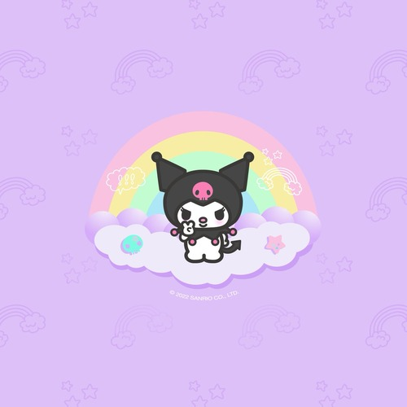

Ariel Bautista
Second year College of Natural and Agricultural Sciences Undeclared major, looking to switch to Pre-Business. My school involvements include UCR Katipunan, which is a Filipino Cultural Club and Alpha Phi Omega, a nationally-recognized service fraternity.
I am looking to switch to University of California Riverside's School of Business to pursue a concentration in Marketing or Finance. I am interested in becoming an Accountant and am looking for internships and experience opportunities in order to help build my career.
Some professional experience that I have include working as the Fellowship Vice President for Alpha Phi Omega's Beta Kappa Pledge Class. Additionally, I have served as Mark Keppel High School's ASB Vice President, advancing my collaboration and public speaking skills.
Experience
Alpha Phi Omega
• Collaborate with peers to achieve fundraising goal of $5,0000
• Organized Fellowship events for brothers
• Participated in over 15 hours of community service
Associated Student Body Vice President
• Led a team of 36 students
• Organized large scale events for 300 or more attendees
• Collaborated with administration to discuss issues within the school
Key Club President
• Led a club of 250 members
• Created opportunites for members to volunteer in the community
• Reported club activity and school representative at district conventions
Education
UC Riverside
Portfolio
